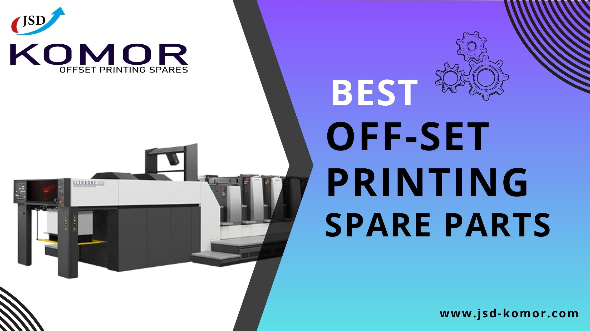

Explore the Best Offset Printing Spare Parts by JSD KOMOR
Introduction
Today, having reliable and high-quality spare parts for offset printing machines are essential to ensure smooth operations and superior print output. Printers around the globe seek dependable solutions that can elevate their printing capabilities and drive productivity. One company that has earned a stellar reputation for delivering the best offset printing spare parts is JSD KOMOR. With a legacy of excellence and a commitment to innovation, JSD KOMOR has become a trusted name in the printing industry. In this blog, we will explore the unique features and advantages of JSD KOMOR's offset printing spare parts that have catapulted them to the forefront of the market.
1. Uncompromising Quality
At JSD KOMOR, quality is at the core of everything they do. Each offset printing spare part is meticulously designed and manufactured using top-grade materials and cutting-edge techniques. The company's uncompromising commitment to quality ensures that every product that bears the JSD KOMOR name is reliable, durable, and built to perform optimally under rigorous printing conditions. Printers can rely on JSD KOMOR's spare parts to consistently deliver exceptional results.
2. Extensive Range of Spare Parts
One of the key factors that set JSD KOMOR apart from its competitors is its vast and diverse range of offset printing spare parts. Whether you are looking for rollers, dampening system components, gripper bars, ink keys, wash-up blades, or other critical components, JSD KOMOR has it all. Their comprehensive inventory covers a wide variety of printing machines and models, ensuring that printers of all sizes and types can find the right spare parts for their equipment.
3. OEM Compatibility
JSD KOMOR's commitment to excellence extends to ensuring seamless integration of their spare parts with original equipment manufacturer (OEM) machines. This compatibility is crucial for printers, as it eliminates concerns about potential issues when replacing worn-out or damaged parts. JSD KOMOR's spare parts fit perfectly with OEM machines, enabling printers to maintain the performance and print quality of their equipment.
4. Advancing with Innovation
In the fast-paced and competitive printing industry, innovation is the key to staying ahead. JSD KOMOR has embraced this philosophy wholeheartedly. Their team of skilled engineers and technicians continuously research and develop new solutions to meet the evolving needs of the printing industry. By adopting the latest manufacturing techniques and incorporating cutting-edge materials, JSD KOMOR ensures that their spare parts are at the forefront of technological advancements, enhancing printing efficiency and overall output.
5. Unparalleled Customer Support
Apart from providing top-quality spare parts, JSD KOMOR understands that comprehensive customer support is vital for printer businesses. Their dedication to customer satisfaction is evident in their exceptional customer support services. Whether you have product inquiries, require technical assistance, or need troubleshooting guidance, JSD KOMOR's team of experts is readily available to assist you. With prompt and reliable support, printers can rest assured that they have a trustworthy partner to help them overcome challenges and keep their operations running smoothly.
Conclusion
JSD KOMOR's best offset printing spare parts have become synonymous with reliability, innovation, and exceptional performance. Their commitment to delivering uncompromising quality, extensive range of spare parts, OEM compatibility, focus on innovation, and unmatched customer support make them the preferred choice for printers worldwide. If you want to elevate your printing capabilities, boost productivity, and ensure outstanding print output, look no further than JSD KOMOR's offset printing spare parts. With a legacy of excellence and a vision for the future, JSD KOMOR continues to lead the printing industry by empowering printers with the best spare parts available.
Frequently Asked Questions (FAQs)
Q. What makes JSD KOMOR's offset printing spare parts stand out from other options in the market?
JSD KOMOR's offset printing spare parts stand out due to their uncompromising quality, extensive range, and continuous innovation. The company's commitment to excellence ensures that their spare parts are reliable, durable, and deliver exceptional performance, making them a preferred choice among printers worldwide.
Q. How can I ensure that I am ordering the correct spare part for my printing machine?
To ensure you order the correct spare part for your printing machine, it is crucial to have accurate information about your machine's make and model. Most spare parts have specific compatibility information with different machine models. JSD KOMOR's website provides detailed product descriptions and compatibility information. If you have any doubts, you can reach out to their customer support team, who will be happy to assist you in finding the right spare part for your equipment.
Q. Can I rely on JSD KOMOR's spare parts for critical printing jobs and high-volume production?
Absolutely! JSD KOMOR's spare parts are built to withstand the demands of critical printing jobs and high-volume production. Their focus on quality ensures that the spare parts perform optimally even under rigorous printing conditions. Printers can rely on JSD KOMOR's spare parts for consistent and superior print output, enhancing overall efficiency and productivity.